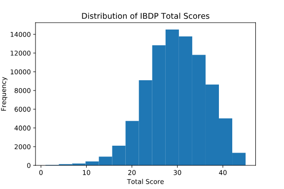
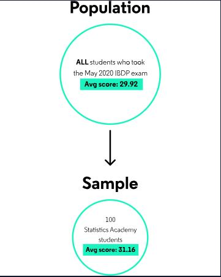
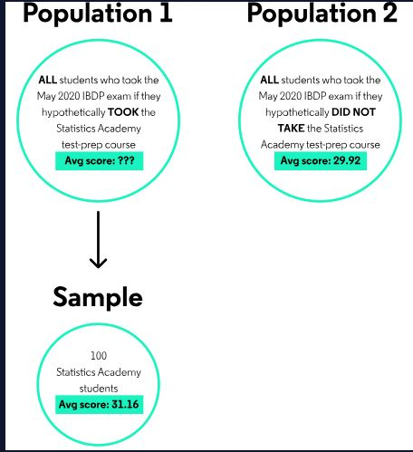
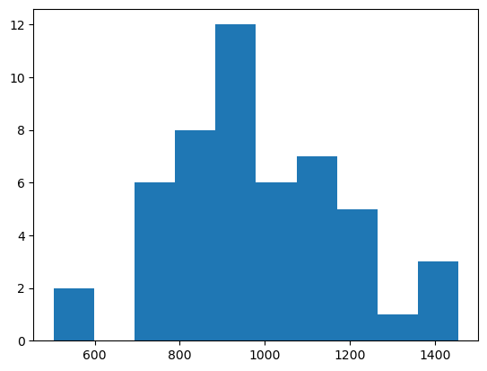
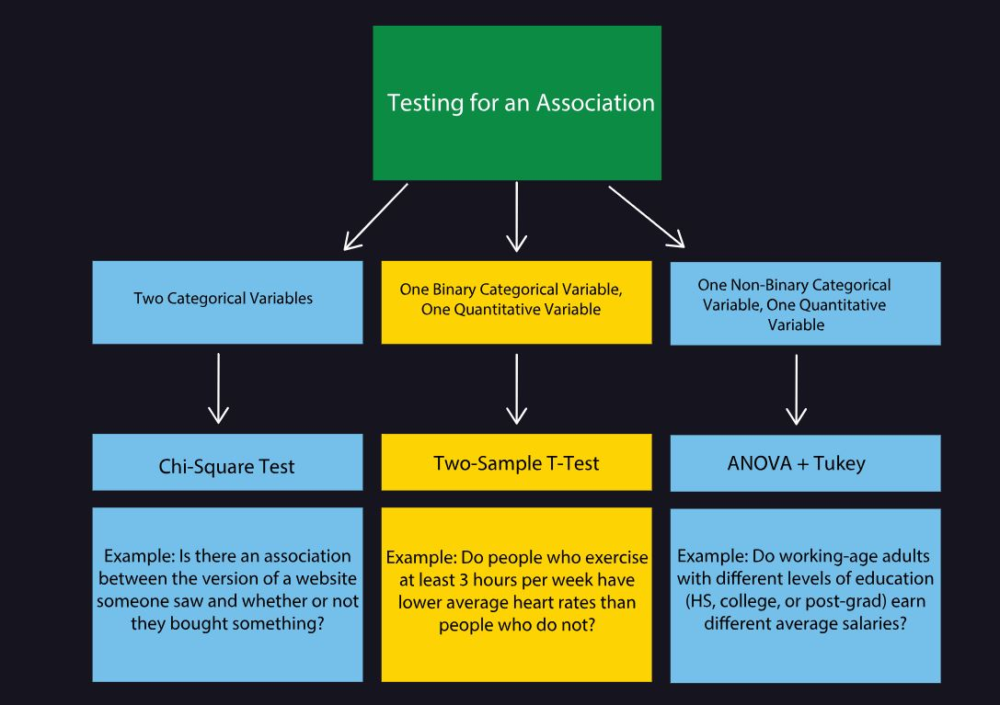
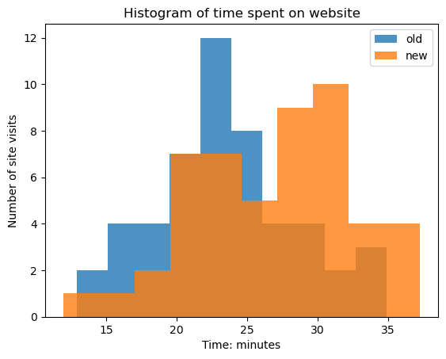
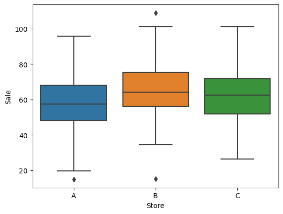
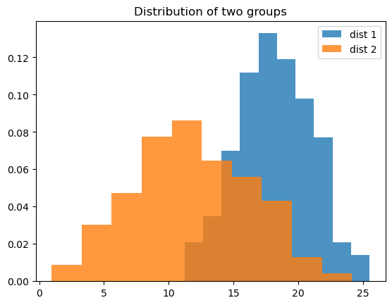

import pandas as pd
import numpy as np
import matplotlib.pyplot as plt
from scipy.stats import ttest_1sampWhat is hypothesis testing?
Hypothesis Testing is a framework for asking questions about a dataset and answering them with probabilistic statements. There are many different kinds of hypothesis tests that can be used to address different kinds of questions and data. In this article, we’ll walk through a simulation of a one sample t- test in order to build intuition about how many different kinds of hypothesis tests work!
Step 1: Ask a Question
The International Baccalaureate Degree Programme (IBDP) is a world-wide educational program. Each year, students in participating schools can take a standardized assessment to earn their degree. Total scores on this assessment range from 1-45. Based on data provided here, the average total score for all students who took this exam in May 2020 was around 29.92. The distribution of scores looks something like this:

Imagine a hypothetical online school, Statistics Academy, that offers a 5-week test-preparation program. Suppose that 100 students who took the IBDP assessment in May 2020 were randomly chosen to participate in the first group of this program and that these 100 students earned an average score of 31.16 points on the exam — about 1.24 points higher than the international average! Are these students really outperforming their peers? Or could this difference be attributed to random chance?
Step 2: Define the Null and Alternative Hypotheses
Before attempting to answer this question, it is useful to reframe it in a way that is testable. Right now, our question (“Are the Statistics Academy students really outperforming their peers?”) is not clearly defined. Objectively, this group of 100 students performed better than the general population — but answering “yes, they outperformed their peers!” doesn’t feel particularly satisfying.
The reason it’s not satisfying is this: if we randomly choose ANY group of 100 students from the population of all test takers and calculate the average score for that sample, there’s a 50% chance it will be higher than the population average. Observing a higher average for a single sample is not surprising.
Of course, large differences from the population average are less probable — if all the Statistics Academy students earned 45 points on the exam (the highest possible score), we’d probably be convinced that these students had a real advantage. The trick is to quantify when differences are “large enough” to convince us that these students are systematically different from the general population. We can do this by reframing our question to focus on population(s), rather than our specific sample(s).
A hypothesis test begins with two competing hypotheses about the population that a particular sample comes from — in this case, the 100 Statistics Academy students:
- Hypothesis 1 (technically called the Null Hypothesis): The 100 Statistics Academy students are a random sample from the general population of test takers, who had an average score of 29.92. If this hypothesis is true, the Statistics Academy students earned a slightly higher average score by random chance. Visually, this set-up looks something like this:

- Hypothesis 2 (technically called the Alternative Hypothesis): The 100 Statistics Academy students came from a population with an average score that is different from 29.92. In this hypothesis,
we need to imagine two different populations that don’t actually exist:one where all students took the Statistics Academy test-prep program and one where none of the students took the program. If the alternative hypothesis is true, our sample of 100 Statistics Academy students came from a different population than the other test-takers. This can be visualized as follows:

There’s one more clarification we need to make in order to fully specify the alternative hypothesis. Notice that, so far, we have not said anything about the average score for “population 1” in the diagram above, other than that it is NOT 29.92. We actually have three choices for what the alternative hypothesis says about this population average:
- it is
GREATER THAN29.92 - it is
NOT EQUAL TO(i.e., GREATER THAN OR LESS THAN) 29.92 - it is
LESS THAN29.92
Later on, we’ll discuss how the choice between “greater than”, “not equal to” and “less than” impacts the test.
Suppose that a random sample of 300 runners in the Boston Marathon were chosen to run in a new model of shoes: the Flying Flier. The average finishing time for these 300 runners was 230 minutes, while the average finishing time for all runners was 233 minutes. Was the average finishing time for this sample significantly different from the average finishing time for all runners?
Null Hypothesis: The average finishing time for Boston Marathon runners wearing the Flying Flyer is equal to 233 minutes.
Alternative Hypothesis: The average finishing time for Boston Marathon runners wearing the Flying Flyer is not equal to 233 minutes.
One-Sample T-Tests in SciPy
In this lesson, we’ll walk through the implementation of a one-sample t-test in Python. One-sample t-tests are used for comparing a sample average to a hypothetical population average. For example, a one-sample t-test might be used to address questions such as:
- Is the average amount of time that visitors spend on a website different from 5 minutes?
- Is the average amount of money that customers spend on a purchase more than 10 USD?
As an example, let’s imagine the fictional business BuyPie, which sends ingredients for pies to your household so that you can make them from scratch. Suppose that a product manager wants online BuyPie orders to cost around 1000 Rupees on average. In the past day, 50 people made an online purchase and the average payment per order was less than 1000 Rupees. Are people really spending less than 1000 Rupees on average? Or is this the result of chance and a small sample size?
prices = pd.read_csv('data/prices.csv', header=None)
print(prices) 0
0 978
1 1080
2 999
3 855
4 1105
5 961
6 899
7 1061
8 880
9 1455
10 505
11 936
12 1024
13 982
14 840
15 930
16 829
17 504
18 955
19 1380
20 1361
21 1130
22 946
23 973
24 1076
25 1131
26 810
27 734
28 1275
29 867
30 962
31 865
32 709
33 1216
34 735
35 768
36 757
37 1060
38 715
39 839
40 999
41 1259
42 1194
43 1082
44 1129
45 1255
46 931
47 1236
48 921
49 907prices.describe()| 0 | |
|---|---|
| count | 50.000000 |
| mean | 980.000000 |
| std | 204.304894 |
| min | 504.000000 |
| 25% | 857.500000 |
| 50% | 961.500000 |
| 75% | 1099.250000 |
| max | 1455.000000 |
prices_mean = np.mean(prices)
print(prices_mean)0 980.0
dtype: float64/home/stephen137/mambaforge/lib/python3.10/site-packages/numpy/core/fromnumeric.py:3462: FutureWarning: In a future version, DataFrame.mean(axis=None) will return a scalar mean over the entire DataFrame. To retain the old behavior, use 'frame.mean(axis=0)' or just 'frame.mean()'
return mean(axis=axis, dtype=dtype, out=out, **kwargs)The average purchase price for these 50 purchases is 980, which is only 2% less than 1000.
Implementing a One-Sample T-Test
In the last exercise, we inspected a sample of 50 purchase prices at BuyPie and saw that the average was 980 Rupees. Suppose that we want to run a one-sample t-test with the following null and alternative hypotheses:
Null:The average cost of a BuyPie order is 1000 RupeesAlternative:The average cost of a BuyPie order is not 1000 Rupees.
SciPy has a function called ttest_1samp(), which performs a one-sample t-test for you.ttest_1samp() requires two inputs, a sample distribution (eg. the list of the 50 observed purchase prices) and a mean to test against (eg. 1000):
tstat, pval = ttest_1samp(sample_distribution, expected_mean)The function uses your sample distribution to determine the sample size and estimate the amount of variation in the population — which are used to estimate the null distribution. It returns two outputs: the t-statistic (which we won’t cover in this course), and the p-value.
Q. Use
ttest_1samp()to run the hypothesis test described above (null: the average price is 1000 Rupees; alternative: the average price is not 1000 Rupees).
# use ttest_1samp to calculate pval
tstat, pval = ttest_1samp(prices, 1000)
# print pval
print(pval)[0.49207448]Does the p-value you got make sense, knowing the mean of prices and having inspected the data?
P-values are probabilities, so they should be between 0 and 1. This p-value is the probability of observing an average purchase price less than 980 (mean) OR more than 1,020 (1000 + diff_from_mean) among a sample of 50 purchases. I
Given that the mean purchase price in this sample was 980, which is not very far from 1000, we probably expect this p-value to be relatively large. The only reason it COULD be small (eg., <.05) is if purchase prices had very little variation (eg., they were all within a few Rupees of 980). We can see from the data print out that this is not the case. Therefore, a p-value around 0.49 makes sense!
Assumptions of a One Sample T-Test
When running any hypothesis test, it is important to know and verify the assumptions of the test. The assumptions of a one-sample t-test are as follows:
- The sample was randomly selected from the population
- For example, if you only collect data for site visitors who agree to share their personal information, this subset of visitors was not randomly selected and may differ from the larger population
- The individual observations were independent
- For example, if one visitor to BuyPie loves the apple pie they bought so much that they convinced their friend to buy one too, those observations were not independent.
- The data is normally distributed without outliers OR the sample size is large (enough)
- There are no set rules on what a “large enough” sample size is, but a common threshold is around 40. For sample sizes smaller than 40, and really all samples in general, it’s a good idea to make sure to plot a histogram of your data and check for outliers, multi-modal distributions (with multiple humps), or skewed distributions. If you see any of those things for a small sample, a t-test is probably not appropriate.
In general, if you run an experiment that violates (or possibly violates) one of these assumptions, you can still run the test and report the results — but you should also report assumptions that were not met and acknowledge that the test results could be flawed.
Q. Using
plt.hist(), plot a histogram of prices and check whether the values are (approximately) normally distributed. Do you see anything to make you concerned that the assumptions of the test were not met (skew, bi-modality, outliers)?
plt.hist(prices)
plt.show()
There does not seem to be any clear skewness, bi-modality, or outliers. The histogram is approximately normal.
Review
You now know how to implement a one-sample t-test in Python and verify the assumptions of the test. To recap, here are some of the things you learned:
- One-sample t-tests are used for comparing a sample mean to an expected population mean
- A one-sample t-test can be implemented in Python using the SciPy
ttest_1samp()function
Assumptions of a one-sample t-test include: - The sample was randomly drawn from the population of interest - The observations in the sample are independent - The sample size is large “enough” or the sample data is normally distributed
daily_prices = np.genfromtxt("data/daily_prices.txt", delimiter=",")daily_prices[0]array([1353., 760., 900., 759., 854., 925., 839., 917., 1236.,
940., 1253., 859., 873., 814., 909., 718., 835., 1027.,
1075., 801., 714., 733., 1137., 1057., 1118., 1025., 858.,
1010., 600., 967., 1286., 1072., 1007., 585., 853., 1286.,
1531., 685., 764., 1113., 905., 711., 758., 643., 748.,
965., 1102., 1239., 1354., 1265., 1046., 995., 1230., 822.,
1185., 1183., 1285., 969., 964., 958., 1159., 1123., 739.,
1076., 1712., 1241., 1337., 852., 1075., 1274., 1023., 862.,
964., 926., 1150., 1124., 1004., 894., 939., 1161., 1028.,
793., 677., 1107., 1356., 1284., 775., 955., 1145., 856.,
930., 748., 1257., 1019., 1180., 1581., 1246., 998., 1078.,
1104.])Q1. Calculate and print out a p-value for day 1 where the null hypothesis is that the average purchase price was 1000 Rupees and the alternative hypothesis is that the average purchase price was not 1000 Rupees. Print out the p-value.
# use ttest_1samp to calculate pval
tstat, pval = ttest_1samp(daily_prices[0], 1000)
# print pval
print(pval)0.6071186852381734Q2. Run the same hypothesis tests for days 1-10 (the fastest way to do this is with a for-loop!) and print out the resulting p-values. What’s the smallest p-value you observe for those 10 days?
for i in range(0,10):
# use ttest_1samp to calculate pval
tstat, pval = ttest_1samp(daily_prices[i], 1000)
print("day", i+1, "p-value:", pval) day 1 p-value: 0.6071186852381734
day 2 p-value: 0.4093623236367092
day 3 p-value: 0.6823152912621232
day 4 p-value: 0.9396281562313855
day 5 p-value: 0.8434532443692766
day 6 p-value: 0.01876544307661009
day 7 p-value: 0.6240646986588566
day 8 p-value: 0.8594296361029083
day 9 p-value: 0.774383958509746
day 10 p-value: 0.6813407662727201The smallest p-value observed was 0.01876544307661009 on day 6 (Python index 5).
np.mean(daily_prices[5])1047.57The largest p-value observed was 0.9396281562313855 on day 4 (Python index 3).
np.mean(daily_prices[3])998.41for i in range(0,10):
# use ttest_1samp to calculate pval
mean_daily_price = np.mean(daily_prices[i])
print("day", i+1, "mean daily price:", mean_daily_price) day 1 mean daily price: 1011.27
day 2 mean daily price: 1018.2
day 3 mean daily price: 1008.51
day 4 mean daily price: 998.41
day 5 mean daily price: 996.06
day 6 mean daily price: 1047.57
day 7 mean daily price: 1011.09
day 8 mean daily price: 995.82
day 9 mean daily price: 994.49
day 10 mean daily price: 990.57The p values makes sense. The smallest p-value relates to the day with mean_daily_price furthest away from 1,000 and the largest p-value relates to the day eith mean_daily_price closest to 1,000.
Q3. Try changing the null hypothesis so that the expected population mean that you’re testing against is different from 1000. Try any numbers that you want. How do your p-values change.
for i in range(0,10):
# use ttest_1samp to calculate pval
tstat, pval = ttest_1samp(daily_prices[i], 1037)
print("day", i+1, "p-value:", pval) day 1 p-value: 0.24174678354033086
day 2 p-value: 0.39414952989720775
day 3 p-value: 0.17244157253100195
day 4 p-value: 0.06834315177301555
day 5 p-value: 0.042280382172154365
day 6 p-value: 0.5966483670441223
day 7 p-value: 0.2534765903169139
day 8 p-value: 0.08334086123628086
day 9 p-value: 0.02887293043007103
day 10 p-value: 0.045267837432505The p-values again make sense. We changed the target value to 1,037 and so the p-value is highest for day 6 which has a mean_daily_price of 1,047.57, close to our target value. The lowest p-value is for day 9 which has mean_daily_price of 994.49 which is far away from from 1,037.
Q1. Suppose we are running a hypothesis test to understand whether the click rate for a “subscribe” button is significantly different from 5%. Fill in the blanks to specify the null and alternative hypotheses for this test.
A1. Null hypothesis: The click rate is equal to 5% Alternative hypothesis: The click rate is not equal to 5%
Q2. Suppose we are running a hypothesis test with the following null and alternative hypotheses: Null hypothesis: 10% of subscribers will read an article Alternative hypothesis: More than 10% of subscribers will read an article. Out of a sample of 100 subscribers who saw an article, 15 people read it. Based on this sample, suppose we run a binomial hypothesis test and calculate a p-value of 0.04. Fill in the blanks to indicate the correct interpretation of this p-value.
A2. If each subscriber has a 10% chance of reading the article, then there is a 4% chance that, among a random sample of 100 subscribers, 15 or more will read the article.
Testing for Association

In this lesson, we’ll use hypothesis tests to make inference about population-level associations between two variables.
We will cover four different hypothesis tests:
- Two Sample T-Tests (for an association between a quantitative variable and a binary categorical variable)
- ANOVA and Tukey Tests (for an association between a quantitative variable and a non-binary categorical variable)
- Chi-Square Tests (for an association between two categorical variables)
The magnitude of differences between population means and the variation in the data play a role in determining statistical significance.
Two-Sample T-Test - quantitative variable (time) vs binary categorical variable (colour scheme)
Suppose that a company is considering a new color-scheme for their website. They think that visitors will spend more time on the site if it is brightly colored. To test this theory, the company shows the old and new versions of the website to 50 site visitors, each — and finds that, on average, visitors spent 2 minutes longer on the new version compared to the old. Will this be true of future visitors as well? Or could this have happened by random chance among the 100 people in this sample?
One way of testing this is with a 2-sample t-test.
The null hypothesis for this test is that average length of a visit does not differ based on the color of the website. In other words, if we could observe all site visitors in two alternate universes (one where they see each version of the site), the average visiting times in these universes would be equal.
We can use SciPy’s ttest_ind() function to perform a 2-sample t-test. It takes the values for each group as inputs and returns the t-statistic (not covered in this course) and a p-value:
import pandas as pd
import matplotlib.pyplot as plt
from scipy.stats import ttest_ind
data = pd.read_csv('data/version_time.csv')
#separate out times for two versions
old = data.time_minutes[data.version=='old']
new = data.time_minutes[data.version=='new']old.head()1 12.90
2 13.76
3 15.68
4 16.28
5 16.88
Name: time_minutes, dtype: float64new.head()0 11.92
6 16.93
7 17.20
13 19.52
14 19.65
Name: time_minutes, dtype: float64#plot overlapping histograms
plt.hist(old, alpha=.8, label='old')
plt.hist(new, alpha=.8, label='new')
plt.title('Histogram of time spent on website')
plt.xlabel('Time: minutes')
plt.ylabel('Number of site visits')
plt.legend()
plt.show()
From an initial eyeball test, there does appear to be a significant association between the version of the website a visitor saw and how long they spent on the site. The time spent seems to be longer for the new site.
However let’s add some statistical weight to our analysis by performing a 2-sample t-test :
#run the t-test
tstat, pval = ttest_ind(old, new)
print(pval)0.0020408264429904Based on a significance threshold of 0.05 there is a significant difference between the average amount of time visitors are spending on the old and new versions of the website.
Multiple Tests
In some circumstances, we might instead care about an association between a quantitative variable and a non-binary categorical variable (non-binary means more than two categories).
For example, suppose that we own a chain of stores that sell ants, called VeryAnts. There are three different locations: A, B, and C. We want to know whether customers are spending a significantly different amount per order at any of the locations.
There are three different comparisons we could make: A vs. B, B vs. C, and A vs. C. One way to answer our question is to simply run three separate 2-sample t-tests.
from scipy.stats import ttest_ind
import seaborn as sns
import matplotlib.pyplot as plt
import pandas as pd# store the data
veryants = pd.read_csv('data/veryants.csv')
a = veryants.Sale[veryants.Store == 'A']
b = veryants.Sale[veryants.Store == 'B']
c = veryants.Sale[veryants.Store == 'C']Let’s carry out an eyeball check of the sales across the three stores :
print(a)0 73.57
1 38.37
2 49.36
3 61.96
4 38.74
...
145 47.86
146 72.52
147 68.99
148 58.24
149 63.85
Name: Sale, Length: 150, dtype: float64print(b)150 95.51
151 54.36
152 40.89
153 96.22
154 64.82
...
295 58.98
296 42.63
297 54.83
298 76.67
299 82.04
Name: Sale, Length: 150, dtype: float64print(c)300 62.80
301 54.63
302 49.87
303 71.38
304 85.13
...
445 65.98
446 50.51
447 46.77
448 70.39
449 42.06
Name: Sale, Length: 150, dtype: float64On first glance it looks like average values are highest in Store B, then C, with lowest in A.
Let’s try to improve our understanding of the distribution of data by visualization - side by side boxplots :
# create plot
sns.boxplot(data=veryants, x='Store', y='Sale')
plt.show()
The above boxplots supports my initial eye-ball check. Of interest are the outliers indicated by the diamond icons - these will impact the mean sales values.
2-Sample T-tests
Let’s add some statistical weight to our arguments by carrying out t-tests for each pair of location data, that is :
Store A vs Store B
Store A vs Store C
Store B vs Store C# run t-tests
tstat, a_b_pval = ttest_ind(a, b)
print(a_b_pval)2.769886558708305e-05# run t-tests
tstat, a_c_pval = ttest_ind(a, c)
print(a_c_pval)0.02102938693149484# run t-tests
tstat, b_c_pval = ttest_ind(b, c)
print(b_c_pval)0.05986788486166067determine significance
a_b_significant = True a_c_significant = True b_c_significant = False
The problem with running multiple tests is that it inflates our probability of a type I error; the more tests we run, the worse the problem becomes! One way of combatting this is to reduce the significance threshold for each test to say 0.01, however another approach is to use ANOVA (Analysis of Variance).
ANOVA (Analysis of Variance) Tests
ANOVA tests the null hypothesis that all groups have the same population mean (eg., the true average price of a sale is the same at every location of VeryAnts).
In Python, we can use the SciPy function f_oneway() to perform an ANOVA. f_oneway() has two outputs: the F-statistic (not covered in this course) and the p-value.
If the p-value is below our significance threshold, we can conclude that at least one pair of our groups earned significantly different scores on average.
Let’s return to our stores example :
# run ANOVA
from scipy.stats import f_oneway
fstat, pval = f_oneway(a, b, c)
print(pval)0.00015355234908845413At a 0.05, or for that matter a 0.01 significance level, the p-value indicates that at least one pair of stores have significantly different sales. At this stage, however, we won’t know which pair of stores! However we can leverage Tukey’s Range Test to unveil this.
Tukey’s Range Test
In Python, we can perform Tukey’s range test using the statsmodels function pairwise_tukeyhsd().
Tukey’s range test is similar to running three separate 2-sample t-tests, except that it runs all of these tests simultaneously in order to preserve the type I error rate (rather than increase it as happens with every iteration of individual tests).
The function output is a table, with one row per pair-wise comparison. For every comparison where reject is True, we “reject the null hypothesis” and conclude there is a significant difference between those two groups.
from statsmodels.stats.multicomp import pairwise_tukeyhsd
tukey_results = pairwise_tukeyhsd(veryants.Sale, veryants.Store, 0.05)
print(tukey_results)Multiple Comparison of Means - Tukey HSD, FWER=0.05
====================================================
group1 group2 meandiff p-adj lower upper reject
----------------------------------------------------
A B 7.2763 0.0001 3.2264 11.3263 True
A C 4.011 0.0529 -0.0389 8.0609 False
B C -3.2653 0.141 -7.3153 0.7846 False
----------------------------------------------------On the basis of the Tukey’s Range Test, there is a statistically significant difference between store A and Store B sales. Note that this result is not the same as when we ran three t-tests (these also suggested a significant difference between stores A and C).
Assumptions of T-Tests, ANOVA, and Tukey
Before we use a two sample t-test, ANOVA, or Tukey’s range test, we need to be sure that the following things are true:
1. The observations should be independently randomly sampled from the population
Suppose the population we are interested in is all visitors to a website. Random sampling will help ensure that our sample is representative of the population we care about. For example, if we only sample site visitors on Halloween, those visitors may behave differently from the general population. In practice, this can be a challenging assumption to meet, but it’s important to be aware of.
2. The standard deviations of the groups should be equal
For example, if we’re comparing time spent on a website for two versions of a homepage, we first want to make sure that the standard deviation of time spent on version 1 is roughly equal to the standard deviation of time spent on version 2. To check this assumption, it is normally sufficient to divide one standard deviation by the other and see if the ratio is “close” to 1. Generally, a ratio between 0.9 and 1.1 should suffice.
That said, there is also a way to run a 2-sample t-test without assuming equal standard deviations — for example, by setting the equal_var parameter in the scipy.stats.ttest_ind() function equal to False. Running the test in this way has some disadvantages (it essentially makes it harder to reject the null hypothesis even when there is a true difference between groups), so it’s important to check for equal standard deviations before running the test.
3. The data should be normally distributed…ish
Data analysts in the real world often still perform these tests on data that are not normally distributed. This is usually not a problem if sample size is large, but it depends on how non-normal the data is. In general, the bigger the sample size, the safer you are!
4. The groups created by the categorical variable must be independent
Here are some examples where the groups are not independent:
- the number of goals scored per soccer player before, during, and after undergoing a rigorous training regimen (not independent because the same players are measured in each category)
- years of schooling completed by a group of adults compared to their parents (not independent because kids and their parents can influence one another)
Worked example
Suppose that we want to run a two-sample t-test to compare the sample means for two groups. Before running the test, we want to check whether the ratio of standard deviations for these groups is equal.
import numpy as np
import matplotlib.pyplot as plt
dist_1 = np.genfromtxt("data/1.csv")
dist_2 = np.genfromtxt("data/2.csv")ratio = dist_1.std() / dist_2.std()
print(ratio)0.6240550627217001The closer the ratio is to 1, the closer are the standard deviations. A value of 0.624 suggests that dist_2 is quite a bit larger than dist_1.
Let’s inspect the spread visually using a histogram :
#plot histograms of each distribution
plt.hist(dist_1, alpha = .8, label = 'dist 1', density=True)
plt.hist(dist_2, alpha = .8, label = 'dist 2', density=True)
plt.title('Distribution of two groups')
plt.legend()
plt.show()
Chi-Square Test
If we want to understand whether the outcomes of two categorical variables are associated, we can use a Chi-Square test. It is useful in situations like:
An A/B test where half of users were shown a green submit button and the other half were shown a purple submit button. Was one group more likely to click the submit button?
People under and over age 40 were given a survey asking “Which of the following three products is your favorite?” Did these age groups have significantly different preferences?
In SciPy, we can use the function chi2_contingency() to perform a Chi-Square test. The input to chi2_contingency is a contingency table, which can be created using the pandas crosstab() function.
For example, suppose we want to know whether gender is associated with the probability of a website visitor making a purchase. The null hypothesis is that there’s no association between the variables (eg. males, females, and non-binary people are all equally likely to make a purchase on the website, so gender and purchase-status are not associated). If the p-value is below our chosen threshold (often 0.05), we reject the null hypothesis and can conclude there is a statistically significant association between the two variables (eg. men, women, and non-binary people appear to have different probabilities of making a purchase, so gender is associated with purchase-status).
Application to our Stores Example
The management at the VeryAnts ant store wants to know if their two most popular species of ants, the Leaf Cutter and the Harvester, vary in popularity between 1st, 2nd, and 3rd graders.
from scipy.stats import chi2_contingency# read in and print data
ants = pd.read_csv("data/ants_grade.csv")
print(ants.head()) Grade Ant
0 1st harvester
1 2nd harvester
2 2nd leaf cutter
3 1st harvester
4 3rd leaf cutterThe input to chi2_contingency is a contingency table, which can be created using the pandas crosstab() function :
# create contingency table
table = pd.crosstab(ants.Grade, ants.Ant)
print(table)Ant harvester leaf cutter
Grade
1st 28 8
2nd 31 5
3rd 23 13# run Chi-Square test and print p-value
from scipy.stats import chi2_contingency
chi2, pval, dof, expected = chi2_contingency(table)
print(pval)0.08356116834982279Using a significance threshold of 0.05, there is no significant association between Grade and Ant type.
Assumptions of a Chi-Square Test
Before we use a Chi-Square test, we need to be sure that the following things are true:
1. The observations should be independently randomly sampled from the population
This is also true of 2-sample t-tests, ANOVA, and Tukey. The purpose of this assumption is to ensure that the sample is representative of the population of interest.
2. The categories of both variables must be mutually exclusive
In other words, individual observations should only fall into one category per variable. This means that categorical variables like “college major”, where students can have multiple different college majors, would not be appropriate for a Chi-Square test.
3. The groups should be independent
Similar to 2-sample t-tests, ANOVA, and Tukey, a Chi-Square test also shouldn’t be used if either of the categorical variables splits observations into groups that can influence one another. For example, a Chi-Square test would not be appropriate if one of the variables represents three different time points.
Examples of whether Chi-Square test appropriate
Appropriate
Researchers are running a study to test a new vaccine for Covid-19 in adults. A sample of 1000 adults (you can assume that they are randomly sampled adults, or at least representative of the population) are randomly split into two groups: half get a vaccine, while the other half get a placebo. Everyone is monitored for six months to see if they develop symptoms of Covid-19. The first few rows of the resulting dataset looks like this:
Group Outcome
vaccine not sick
vaccine not sick
placebo sick
placebo not sickThe researchers want to use this data to determine whether their vaccine will be effective at preventing illness in the general population of adults (eg., is whether or not someone got a vaccine associated with whether or not they got sick?)
This research question addresses an association between two categorical variables.
- The sample is representative of the population,
- the categories are mutually exclusive (each person gets a placebo or vaccine but not both; each person gets sick or doesn’t get sick), and
- the groups are independent.
Not appropriate
Researchers are interested in studying the effect of a 10 minute yoga regimen on self-reported mood in adults. In order to test this, a representative sample of 1000 adults are asked to complete a survey where they rate their current happiness level as “very low”, “low”, “neutral”, “high”, or “very high”. Each person then completes a 10 minute yoga regimen, then responds to the same survey once again. The first few rows of data from this study look like this:
Person ID Time Happiness
1 before yoga low
1 after yoga neutral
2 before yoga neutral
2 after yoga highThe researchers want to know if 10 minutes of yoga can help improve self-reported mood for adults in the general population (eg., is whether or not someone has just completed 10 minutes of yoga associated with their self-reported happiness level?).
Note that one of the categorical variables has to do with time (before or after yoga). This variable splits observations into groups that are not independent: someone’s happiness level before yoga can clearly influence their happiness level after yoga.